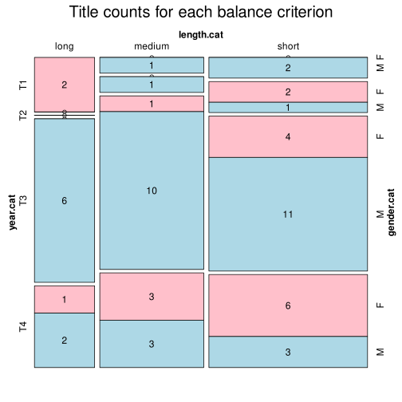

Click on a column heading to sort. Click on a text identifier to read the text (may not work in older browsers).
| Identifier | Encoding | Pages | Words | (Size) | Date (Slot) | Title | Author | Sex | Reprints |
|---|---|---|---|---|---|---|---|---|---|
| NOR0001 |
eltec-1 | 362 | 66894 | (medium) | ? (T3) | Garman & Worse | Kielland, Alexander (1849-1906) | M | high |
| NOR0002 |
eltec-1 | 0 | 37869 | (short) | ? (T3) | Forraadt | Skram, Amalie (1846-1905) | F | high |
| NOR0003 |
eltec-1 | 216 | 141891 | (long) | ? (T4) | Juvikingar | Duun, Olav (1876-1939) | M | high |
| NOR0004 |
eltec-1 | 216 | 183721 | (long) | ? (T3) | Bondestudentar | Garborg, Arne (1851-1924) | M | high |
| NOR0005 |
eltec-1 | 521 | 119437 | (long) | ? (T1) | Amtmandens døtre | Collett, Camilla (1813-1895) | F | high |
| NOR0006 |
eltec-1 | 165 | 51597 | (medium) | ? (T3) | Familien Paa Gilje | Lie, Jonas Lauritz (1833-1908) | M | high |
| NOR0007 |
eltec-1 | 129 | 25802 | (short) | ? (T4) | Fru Marta Oulie | Undset, Sigrid (1882-1949) | F | high |
| NOR0009 |
eltec-1 | 178 | 130597 | (long) | ? (T3) | Kommandørens døtre | Lie, Jonas Lauritz (1833-1908) | M | high |
| NOR0010 |
eltec-1 | 92 | 27645 | (short) | ? (T2) | En Glad Gut | Bjørnson, Bjørnstjerne Matrtinius (1832-1910) | M | high |
| NOR0011 |
eltec-1 | 276 | 70379 | (medium) | ? (T4) | I blinda | Duun, Olav (1876-1939) | M | high |
| NOR0012 |
eltec-1 | 317 | 153296 | (long) | ? (T3) | Fred | Garborg, Arne (1851-1924) | M | high |
| NOR0013 |
eltec-1 | 263 | 60769 | (medium) | ? (T3) | Mannfolk | Garborg, Arne (1851-1924) | M | high |
| NOR0017 |
eltec-1 | 69 | 61895 | (medium) | ? (T3) | Sjur Gabriel | Skram, Amalie (1849-1905) | F | high |
| NOR0018 |
eltec-1 | 229 | 46457 | (short) | ? (T3) | Lucie | Skram, Amalie (1849-1905) | F | high |
| NOR0019 |
eltec-1 | 313 | 53361 | (medium) | ? (T3) | Skipper Worse | Kielland, Alexander (1849-1906) | M | high |
| NOR0020 |
eltec-1 | 202 | 64041 | (medium) | ? (T2) | Lodsen og hans Hustru | Lie, Jonas Lauritz (1833-1908) | M | high |
| NOR0021 |
eltec-1 | 733 | 133290 | (long) | ? (T3) | Fra Kristiania-Bohêmen | Jæger, Hans Henrik (1854-1910) | M | high |
| NOR0022 |
eltec-1 | 143 | 35139 | (short) | ? (T3) | Frit Forhold | Garborg, Hulda (1862-1934) | F | high |
| NOR0023 |
eltec-1 | 215 | 48766 | (short) | ? (T3) | Fra Finmarken (Lajla) | Friis, Jens Andreas (1821-1896) | M | high |
| NOR0024 |
eltec-1 | 197 | 39034 | (short) | ? (T4) | Fru Evas Dagbog | Garborg, Hulda (1862-1934) | F | high |
| NOR0025 |
eltec-1 | 92 | 22796 | (short) | ? (T3) | Paa sjølvstyr | Løland, Rasmus (1861-1907) | M | low |
| NOR0026 |
eltec-1 | 165 | 26689 | (short) | ? (T3) | Streik | Sivle, Per (1857-1904) | M | high |
| NOR0027 |
eltec-1 | 316 | 56089 | (medium) | ? (T3) | Arbeidsfolk | Kielland, Alexander (1849-1906) | M | high |
| NOR0028 |
eltec-1 | 220 | 47766 | (short) | ? (T4) | Harald | Duun, Olav (1876-1939) | M | high |
| NOR0036 |
eltec-1 | 0 | 20428 | (short) | ? (T1) | Mordet paa Maskinbygger Roolfsen | Hansen, Mauritz Christopher (1794-1842) | M | low |
| NOR0037 |
eltec-1 | 0 | 86868 | (medium) | ? (T1) | Arne | Bjørnson, Bjørnstjerne Matrtinius (1832-1910) | M | high |
| NOR0040 |
eltec-1 | 0 | 12040 | (short) | ? (T3) | Min Bedstemoders Fortælling | Thoresen, Magdalene (1819-1903) | F | low |
| NOR0041 |
eltec-1 | 0 | 71311 | (medium) | ? (T3) | Farlige Folk | Elster, Kristian (1841-1881) | M | low |
| NOR0042 |
eltec-1 | 0 | 23159 | (short) | ? (T3) | En Professor | Vibe, Johan Ludvig Nils Henrik (1840-1897) | M | low |
| NOR0043 |
eltec-1 | 0 | 65173 | (medium) | ? (T3) | Tidlig Høst | Valseth, Otto (1861-1913) | M | low |
| NOR0044 |
eltec-1 | 0 | 45098 | (short) | ? (T3) | Cargadør Sahl | Dahl, Jonas (1849-1919) | M | low |
| NOR0045 |
eltec-1 | 0 | 35914 | (short) | ? (T3) | Kobberslangen | Krag, Thomas Peter (1868-1913) | M | low |
| NOR0046 |
eltec-1 | 0 | 16378 | (short) | ? (T3) | Korset | Obstfelder, Sigbjørn (1866-1900) | M | low |
| NOR0047 |
eltec-1 | 0 | 16022 | (short) | ? (T3) | I afgrunden | Finne, Gabriel (1866-1899) | M | low |
| NOR0048 |
eltec-1 | 0 | 82809 | (medium) | ? (T3) | Enken | Krag, Thomas Peter (1868-1913) | M | low |
| NOR0049 |
eltec-1 | 0 | 83775 | (medium) | ? (T4) | Mod Kvæld | Andersen, Tryggve (1866-1920) | M | low |
| NOR0050 |
eltec-1 | 0 | 34252 | (short) | ? (T4) | Reisen til Monaco og andre erindringer | Paulsen, John (1851-1924) | M | low |
| NOR0051 |
eltec-1 | 0 | 60926 | (medium) | ? (T4) | Harriet Blich | Vogt, Nils (1864-1937) | M | low |
| NOR0053 |
eltec-1 | 0 | 30650 | (short) | ? (T4) | Fiskaren | Hovden, Anders (1860-1943) | M | low |
| NOR0054 |
eltec-1 | 0 | 43315 | (short) | ? (T4) | Hollases Krønike | Jølsen, Ragnhild (1875-1908) | F | high |
| NOR0055 |
eltec-1 | 0 | 27623 | (short) | ? (T4) | Rikka Gan | Jølsen, Ragnhild (1875-1908) | F | high |
| NOR0056 |
eltec-1 | 0 | 42198 | (short) | ? (T4) | Fernanda Mona | Jølsen, Ragnhild (1875-1908) | F | high |
| NOR0057 |
eltec-1 | 0 | 25898 | (short) | ? (T4) | Krabvaag | Normann, Regine (1867-1939) | F | low |
| NOR0059 |
eltec-1 | 0 | 71379 | (medium) | ? (T3) | De Fredløse | Janson, Kristofer (1841-1917) | M | low |
| NOR0060 |
eltec-1 | 365 | 194753 | (long) | ? (T3) | Syk Kjærlihet | Jæger, Hans Henrik (1854-1910) | M | high |
| NOR0061 |
eltec-1 | 427 | 206289 | (long) | ? (T4) | Fængsel og fortvilelse | Jæger, Hans Henrik (1854-1910) | M | high |
| NOR0063 |
eltec-1 | 0 | 54775 | (medium) | ? (T4) | Eli | Garborg, Hulda (1862-1934) | F | low |
| NOR0064 |
eltec-1 | 0 | 79006 | (medium) | ? (T1) | Grevens Datter | Winsnes, Hanna (1789-1872) | F | low |
| NOR0065 |
eltec-1 | 84 | 33120 | (short) | ? (T1) | Synnøve Solbakken | Bjørnson, Bjørnstjerne Matrtinius (1832-1910) | M | high |
| NOR0066 |
eltec-1 | 0 | 27466 | (short) | ? (T3) | Rachel | Finne, Gabriel (1866-1899) | M | low |